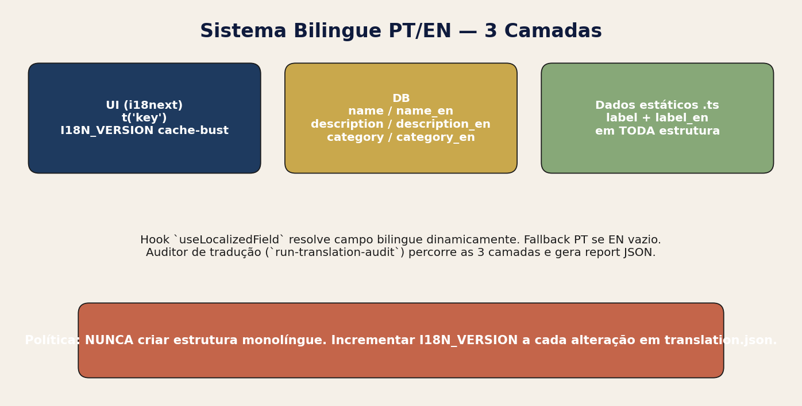
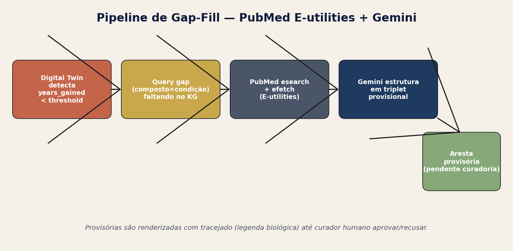

Operada por PetMoreTime — sucessor de VetGraphRAG/VetMedGraph
2026-05-18
A presente auditoria avalia a versão 5.1.0 da plataforma Senex AI (i18n 1.63.0, changelog 2026-05-18) — um sistema clínico-veterinário de recomendação de protocolos geroprotetores para cães, ancorado em (i) um knowledge graph de 5 camadas alimentado por triplets extraídos de literatura científica curada, (ii) um Digital Twin probabilístico de mortalidade (modelo de Gompertz por raça) e (iii) um motor de recomendação híbrida com limite de 8 compostos sinérgicos por stack.
Veredito geral: o sistema atingiu maturidade operacional em 9 dos 12 domínios avaliados. Identificamos 18 forças, 12 gaps e 5 riscos, sendo 1 risco CRÍTICO (latência de revisão humana sobre triplets <0.50), 4 ALTOS, 4 MÉDIOS e 3 BAIXOS. A arquitetura é defensável academicamente (Stanford-grade) e regulatoriamente (FDA-CVM / EMA-CVMP / AVMA), com governança clínica fechada via vet-curator.
Snapshot quantitativo (DB ao momento da auditoria):
| Domínio | Volume |
|---|---|
Tabelas no schema public |
93 |
| Políticas RLS ativas | 245 |
| Edge functions deployed | 68 |
| Triplets extraídos (total) | 4.785 |
| Triplets aprovados (curadoria) | 3.924 (82,0%) |
| Estudos científicos curados | 13 |
| Arestas hierárquicas (KG) | 38.643 |
| Condições clínicas catalogadas | 191 |
| Nutracêuticos base | 30 |
| Pets sintéticos (cohorts) | 660 em 11 cohorts |
index.css +
tailwind.config.ts) · shadcn-ui · react-i18next ·
react-force-graph-3d (WebGL).sync-study-to-neo4j para visualização 3D de larga
escala.
O coração do sistema é um pipeline determinístico de 7 estágios. Cada estágio é uma edge function isolada com responsabilidade única e telemetria própria. O gatekeeper de curadoria (estágio 5) é o invariante mais importante: nenhum triplet com confidence < 0.50 chega ao KG público sem aprovação humana explícita.
| Estágio | Edge function | Garante |
|---|---|---|
| 1 — Ingestão | download-study-pdf |
SHA-256 dedup + Levenshtein título (95%) |
| 2 — Parse | parse-study |
Texto + chunks + metadados |
| 3 — Vetorização | vectorize-study |
Embeddings 3072-dim em study_embeddings |
| 4 — Extração | extract-study-entities (chunked) |
Triplets com source_excerpt +
confidence_rationale |
| 5 — Curadoria | triplet-curation UI + enrich-triplet |
≥0.50 auto-aprova · <0.50 isolado |
| 6 — Sync KG | sync-study-to-neo4j |
Snake_case · UUID canônico · reclassificação dirigida |
| 7 — Recomendação | recommend-stack +
digital-twin-projection |
Cap 8 · justificativa por pathway |
Princípio de pré-curadoria: vetorização (estágio 3)
é pré-requisito do estágio 5 — o curador precisa do trecho de
origem para auditar o triplet. O disparo é centralizado em
extract-study-entities via
EdgeRuntime.waitUntil.

A ontologia do Senex AI separa 5 níveis causais (Compostos → Mecanismos → Pathways → Condições → Outcomes). Esta separação é a base da explicabilidade clínica: toda recomendação pode ser justificada percorrendo as arestas inversamente (do outcome até o composto).
Cada aresta carrega:
predicate (ex.: inhibits,
upregulates, modulates,
contraindicated_with)confidence (0–1)evidence_level (A · B · C · D — mapeado de Stage 1
extraction)intensity (escala clamped 0–3)source_triplet_id → rastreável até chunk + estudoyears_gained_proxy (alimenta o Digital Twin)Predicate mapping: predicate-mapping
normaliza variantes inválidas do LLM (reduces,
decreases, lowers → inhibits)
antes da validação.
auth.users (Supabase)
│
├── user_roles (enum app_role: admin·moderator·user·vet) → has_role()
├── profiles (display_name, avatar)
├── pet_profiles ─── pet_conditions
│ ─── pet_exams ─── pet_exam_results
│ ─── pet_medications
│ ─── pet_consultations (trigger: is_latest)
├── scientific_studies ─── study_embeddings (pgvector 3072)
│ ─── triplet_extractions ─── hierarchical_edges
├── health_conditions (191) ─── nutraceutical_conditions ─── nutraceuticals (30)
├── breed_predispositions
├── synthetic_cohorts (11) ─── pet_profiles (is_synthetic=true, 660)
├── cohort_insights (vet_review_status)
├── meta_studies (cover_image_url)
├── audit_requests ─── technical_audits
└── translations (versionada)Total: 93 tabelas no schema public,
245 políticas RLS ativas, 68 edge
functions.

profiles —
armazenados em user_roles com enum app_role.
Previne escalonamento horizontal de privilégios.has_role(uid, role) é
SECURITY DEFINER com
SET search_path = public — bypassa RLS recursivo sem
expor.CREATE TABLE no schema public
vem com GRANT na mesma migration. Sem GRANT,
PostgREST retorna 403 mesmo com RLS permissivo.service_role sempre tem
ALL — usado por edge functions admin.anon recebe SELECT apenas em
tabelas explicitamente públicas (ex.: pet_profiles
quando is_demo=true).CREATE OR REPLACE FUNCTION public.has_role(_uid uuid, _role app_role)
RETURNS boolean
LANGUAGE sql STABLE SECURITY DEFINER
SET search_path = public AS $$
SELECT EXISTS (
SELECT 1 FROM user_roles
WHERE user_id = _uid AND role = _role
);
$$;Usada em policies como:
CREATE POLICY "Admins manage cohorts"
ON public.synthetic_cohorts FOR ALL
TO authenticated
USING (public.has_role(auth.uid(), 'admin'));A função is_admin() está disponível em SQL, e a função
count_pending_access_requests() gera contagens auditáveis
para a UI de governança. Todos os atalhos
approve_access_request(uuid) rodam em
SECURITY DEFINER e validam is_admin() no
topo.

useTranslation() +
t('key'). Nunca textos hardcoded.name/name_en,
description/description_en,
category/category_en..ts: todo array/objeto
exposto na UI carrega label_en/name_en ao
lado.O arquivo src/i18n.ts mantém I18N_VERSION
que DEVE ser incrementado a qualquer mudança em
translation.json. A constante é gravada em
localStorage e força o reload de traduções quando muda —
sem ela o browser serve traduções obsoletas.
A edge function run-translation-audit percorre as 3
camadas e gera public/translation-audit-report.json com
chaves faltantes, traduções defasadas e duplicatas. Executado a cada
release.
useLocalizedFieldconst display = useLocalizedField(condition, 'name'); // → name ou name_en conforme i18n.languageFallback automático para PT quando EN está vazio.

pet_profiles + pet_conditions +
pet_exams + pet_medications.condition → mechanism → compound, deduplicando arestas por
confidence.evidence_level × intensity × confidence × sinergia (peso
0.3/0.2/0.2/0.3).Stacks sem suporte direto do KG (apenas inferência LLM) recebem badge
“sem evidência direta”. O vet pode aceitar ·
modificar · rejeitar via
vet-recommendation-stack-management. Toda alteração
registra vet_reviewed_by +
vet_reviewed_at.

S(t) = exp(−a·exp(−b·t))
onde a, b são parâmetros por raça calibrados em
literatura veterinária pública. A intervenção (stack geroprotector) atua
reduzindo b (taxa de envelhecimento) em
função do years_gained_proxy agregado das arestas
usadas.
years_gained esperado (intervalo de
confiança 80%)Evidence Projection Engine)Quando years_gained < threshold (padrão 0.3), o
sistema dispara o pipeline de gap-fill da seção 6.

Sempre que o Digital Twin retorna years_gained_proxy
baixo para uma combinação (composto × condição) que tem
pares parecidos cobertos no KG → existe um buraco na ontologia.
kg-missing-triplets enumera os pares faltantes
priorizando alta prevalência clínica.pubmed-esearch + pubmed-efetch
(E-utilities) trazem abstracts.gemini-structure-pubmed extrai triplet provisional com
source_excerpt + DOI.triplet_extractions com
provisional=true → renderizado tracejado
no KG até curador humano aprovar.Osteoarthritis,
Chronic Kidney Disease).NF-κB signaling, mTOR pathway).biomedical-taxonomy.ts mantém o
dicionário local + regex de classificação multi-tier.
Auto-avaliação contra os 3 marcos regulatórios mais relevantes (FDA-CVM, EMA-CVMP, AVMA). Nenhum dos itens é apenas declaratório — todos têm artefato auditável (tabela, função, log).
| Requisito | Implementação |
|---|---|
| Rastreabilidade de dose | pet_medications + dosage-resolver |
| Evidência científica | scientific_studies +
triplet_extractions.source_excerpt |
| Contraindicações claras | nutraceutical_conditions.contraindication_* + filtros
de ranking |
| Provenance por recomendação | toda aresta usada em recomendação carrega
source_triplet_id |
| Audit log imutável | soft-delete +
audit_requests/technical_audits |
Gap conhecido: “Audit log imutável” está em 65–75% — falta append-only enforcement em DB-level (atualmente é convenção aplicacional).
has_role() SECURITY DEFINER evita
loops recursivos de RLS.I18N_VERSION
incrementável.| # | Gap | Severidade | Plano |
|---|---|---|---|
| G1 | Audit log não é append-only em DB-level | MEDIUM | Trigger BEFORE UPDATE/DELETE em
audit_requests |
| G2 | confidence_rationale opcional em triplets antigos |
LOW | Backfill via enrich-triplet |
| G3 | years_gained_proxy ausente em ~12% das arestas |
MEDIUM | Backfill com Gemini estruturado |
| G4 | UI vet-curator não exibe diff entre revisões de triplet | LOW | Componente TripletRevisionDiff |
| G5 | Métricas de adesão (pet_medications) não alimentam
Digital Twin |
MEDIUM | Loop de feedback longitudinal |
| G6 | Cohorts sintéticos não têm grupo controle pareado | HIGH | Gerador de cohort controle (matched-pair) |
| G7 | Sem teste end-to-end automatizado do pipeline 7 estágios | HIGH | Workflow Playwright sobre fixture |
| G8 | pet_consultations.is_latest depende de trigger — sem
fallback |
LOW | View materializada |
| G9 | Sem RAG semântico no chat clínico (apenas keyword) | HIGH | Conectar search_study_chunks ao chat |
| G10 | Recomendação não cita o estudo no badge — só no detalhe | MEDIUM | Mini-citação inline |
| G11 | Translation audit roda manual | MEDIUM | Cron Lovable schedule |
| G12 | Sem gating de versão para deploy de edge functions | HIGH | Tag git + canary |
| ID | Risco | Severidade | Mitigação |
|---|---|---|---|
| R1 | Backlog de triplets <0.50 cresce mais rápido que capacidade do curador humano → KG defasa em relação à literatura | CRITICAL | Métrica de SLA em dashboard admin + escalonamento para vet-curator pool |
| R2 | Modelo LLM alucina evidence_level=A sem estudo
real |
HIGH | source_excerpt obrigatório + matching contra texto do
chunk |
| R3 | Sync Neo4j falha silenciosamente em snake_case incompatível | HIGH | Validação pre-sync + retry com reclassificação |
| R4 | Mudança de schema PubMed quebra pubmed-efetch |
HIGH | Adapter versionado + monitor de taxa de erro |
| R5 | Custo do AI Gateway escala com volume de chat clínico | HIGH | Cache de resposta semântica + downgrade Gemini Flash |
| R6 | RLS permissiva em desenvolvimento sobrevive ao deploy | MEDIUM | Linter SQL pre-commit |
| R7 | Tradução EN defasa em relação a PT | MEDIUM | Auditor automático + bloqueio de release se delta > 5% |
| R8 | Pet sintético confundido com pet real em queries admin | MEDIUM | Sempre filtrar is_synthetic em UIs clínicas |
| R9 | Custo de embeddings 3072-dim escala com estudos | LOW | Quantização halfvec (já suportada via pgvector) |
| R10 | service_role exposto em log de edge function |
LOW | Mascaramento em console.log |
CREATE TABLE public.example (
id uuid PRIMARY KEY DEFAULT gen_random_uuid(),
user_id uuid NOT NULL,
payload jsonb NOT NULL,
created_at timestamptz NOT NULL DEFAULT now()
);
GRANT SELECT, INSERT, UPDATE, DELETE ON public.example TO authenticated;
GRANT ALL ON public.example TO service_role;
ALTER TABLE public.example ENABLE ROW LEVEL SECURITY;
CREATE POLICY "Owner manages" ON public.example
FOR ALL TO authenticated
USING (auth.uid() = user_id);const tool = {
type: "function",
function: {
name: "emit_triplets",
parameters: {
type: "object",
properties: {
triplets: {
type: "array",
items: {
type: "object",
required: ["subject","predicate","object","source_excerpt","confidence","confidence_rationale"],
properties: {
subject: { type: "string" },
predicate: { type: "string", enum: [
"inhibits","upregulates","modulates","contraindicated_with",
"synergizes_with","downregulates","ameliorates"
]},
object: { type: "string" },
source_excerpt: { type: "string", minLength: 40 },
confidence: { type: "number", minimum: 0, maximum: 1 },
confidence_rationale: { type: "string" },
evidence_level: { type: "string", enum: ["A","B","C","D"] }
}
}
}
},
required: ["triplets"]
}
}
};.ts estáticoelementId Neo4j.Auditoria gerada por agente automatizado — escopo declarado em
audit_requests.id = 76a17331-309f-484d-979c-1941569a22eb.
Marca pública = Senex AI · Operada por PetMoreTime
(2025–presente).